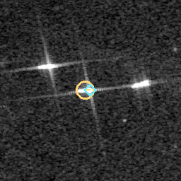
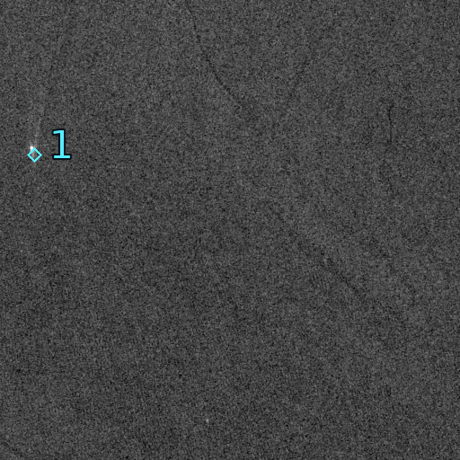
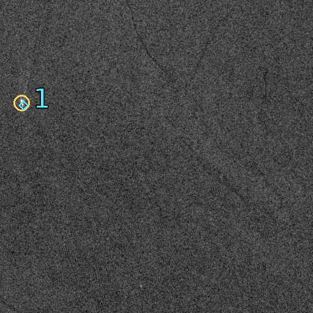
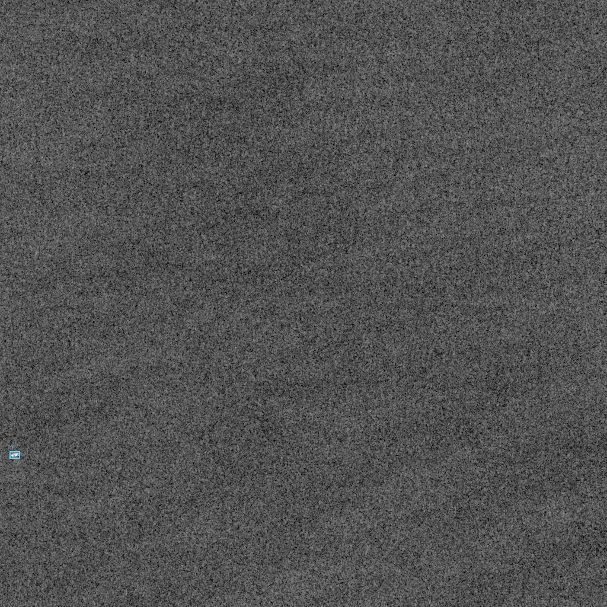

AI 2026 · Bảng C · Chặng 1
Kết quả cải tiến trên ảnh radar thật
Đổi tập ảnh và số lượt rà để kiểm tra số nhãn tìm được. Xem ảnh nguồn, cách hệ thống xử lý khi thiếu AIS và tải hồ sơ đối chiếu.

Recall theo số lượt rà
So sánh các phương pháp với cùng số ứng viên cần rà cho từng cảnh. Một ứng viên được ghép với tối đa một nhãn tham chiếu.
Đang tải số liệu đối chứng…
| Phương pháp | Khớp nhãn | Chưa khớp |
|---|
Ứng viên chưa khớp có thể gồm mục tiêu chưa được gắn nhãn. Các tỷ lệ chỉ áp dụng cho phạm vi ảnh và nhãn đã chấm.
Thử xếp hạng theo đồng thuận giữa hai mô hình
Trên các lượt chụp đã dùng, thử dùng vị trí trong danh sách của YOLO và xView3 để ưu tiên điểm cần rà. Phép chấm giữ đúng số lượt rà từng cảnh và ghép một–một trong 100 m.
| Tập ảnh và lượt rà | Đã công bố | Gộp hạng | Giữ đầu danh sách |
|---|
Cách giữ đầu danh sách được thiết kế sau khi xem kết quả gộp hạng. Cần kiểm tra bằng lượt chụp mới trước khi chọn cấu hình mặc định.
Ca tìm thêm trên cùng ảnh SAR


Thử quyết định ghép AIS
Chọn một tình huống và thay đổi tuổi bản tin hoặc độ bất định vị trí. Kết quả mô phỏng được tính trước bằng cùng mã ghép Python của ứng dụng SonarNet.
| Điểm SAR | Trạng thái và lý do | Cặp vị trí |
|---|
Ngưỡng quyết định của bản này
Đối chiếu quyết định ghép AIS
So sánh bốn cách đề xuất ghép trên cùng sáu lượt chụp. Cặp vị trí cần qua kiểm tra thời gian, độ bất định và các ứng viên cạnh tranh. Khi kích thước mâu thuẫn, hồ sơ chuyển sang trạng thái đang xác minh.
| Phương pháp | Đồng ý với mốc | Khác mốc | Chưa có mốc kiểm chứng |
|---|
Các đề xuất chưa có mốc kiểm chứng cần được rà thủ công. Tập nhãn dùng để đánh giá quyết định ghép khác với tập 13 mốc dùng để đánh giá recall phát hiện SAR.
Hồ sơ ảnh thật thiếu AIS

Sentinel-1 VV · 30/10/2026 UTC
Ứng viên số 1 đang chờ xác minh
Ảnh ghép trong ngày từ Copernicus Data Space. Hồ sơ ghi ảnh nguồn, ứng viên và mã băm. Trạng thái AIS là thiếu dữ liệu, nên chưa có kết luận về danh tính.

Tài liệu và ứng dụng
Trang này hiển thị minh chứng đã lưu. Mở ứng dụng Streamlit để dùng bản đồ và các luồng xử lý dữ liệu của SonarNet.